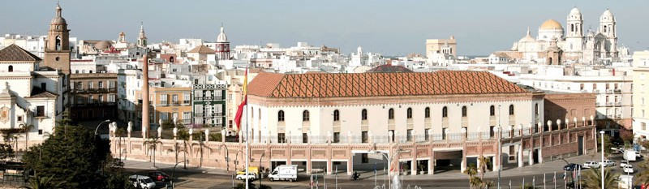
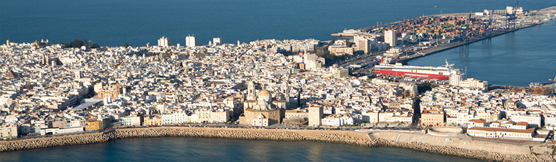

Noticias
KATE MIDDLETON CON 33 AÑOS
¡Queremos desearla a la tan elegante Duquesa de Cambridge, Kate Middleton, un muy feliz 33 cumpleaños! No sólo es querida por el mundo, sino que se ha convertido en un icono de estilo real desde que se convirtió en la novia del príncipe Guillermo. ¿Y adivinad cual es su marca favorita para vestir? Alexander McQueen,… y no es un juego de palabras, ya que su esposo es el siguiente en la línea de sucesión al trono. Incluso tiene su propia terminología en el mundo de la moda británica y estadounidense, conocida como el “Efecto Kate Middleton”, debido a su increíble estilo de moda vanguardista. ¿Y adivinad cual es su marca favorita para vestir? Alexander McQueen,… y no es un juego de palabras, ya que su esposo es el siguiente al trono.
EL ESTILO DE CATE BLANCHETT
Cate Blanchett es una de esas bellezas etéreas y singulares que no son fáciles de encontrar en la escena de Hollywood. Ella, al igual que Jessica Chastain, desprende elegancia y la forma en la que se desenvuelve emana serenidad y sofisticación. Pero no es sólo su aspecto lo que desprende un halo brillante alrededor de ella, sino también su experiencia en la actuación y su elección de papeles en las películas. Blanchett se ha convertido en una de las actrices más veneradas y respetadas de Hollywood y nos encanta dedicarla este post a ella y a los vestidos que ha elegido para las muchas entregas de premios a las que ha sido invitada. ¡También celebramos algo más de una década viendo a esta diosa inglesa caminar por la alfombra roja!
DELEVINGNE & LA REVISTA “LOVE”
¿Es Cara Delevingne el epítome de una mujer del Renacimiento? En primer lugar, es una super modelo hermosa, también interpreta papeles en películas como Suicide Squad and Pan, y por si fuera poco, sabe tocar la batería. ¿Qué más puede hacer? Pues sorpréndete porque la multitalentosa británica no sólo ha sido modelo de portada en cuatro ocasiones para la revista LOVE, sino que ahora también colabora como editora.
La modelo anunció la noticia a través de Instagram, publicando una foto con el siguiente subtitulo: “Muy contenta de anunciar que soy editora colaboradora de la nueva @thelovemagazine styling by @kegrand bodysuit by @riccardotisci17 #THANKYOU.”. “Normalmente es a mi a la que se le pregunta, pero me encanta la experiencia.


Información
Edificio

El Palacio de Congresos de Cádiz está construido aprovechando las estructuras de la antigua fábrica de tabacos y sobre el solar de la antigua alhóndiga de la ciudad. La fábrica de tabacos, creada en 1741, se traslada después a los locales de la alhóndiga en la calle Plocia, que fue posteriormente cedida al gobierno para la instalación de una fábrica moderna. Con tres pisos de altura, planta irregular formando manzana exenta y estilo neomudéjar.
El resultado del proyecto fue un macizo y llamativo edificio de ladrillo visto, cerámica vidriada en cubiertas y algún detalle a mitad de camino entre las fábricas inglesas y la evocación tradicionalista. En su interior se encuentran interesantes estructuras de hierro, sobresaliendo las del patio y la gran montera de fundición y vidrio que cubre el mismo.
Ubicado en pleno corazón del casco histórico junto a la estación de ferrocarriles, el puerto de Cádiz y el circuito comercial, el Palacio de Congresos de Cádiz se ha convertido en uno de los edificios emblemáticos de la ciudad.
Ciudad

Cádiz es un municipio español, capital de la provincia española homónima, en la comunidad autónoma de Andalucía, en el extremo suroccidental de la Europa continental. Es el tercer núcleo poblacional de Andalucía y uno de los más activos económica e industrialmente, en Andalucía, España. Además, conforma junto a los municipios de Chiclana de la Frontera, El Puerto de Santa María, Jerez de la Frontera, Puerto Real, Rota y San Fernando la Mancomunidad de Municipios Bahía de Cádiz.
Con 121.739 habitantes en 2014 es la segunda más poblada de la provincia homónima por detrás de Jerez de la Frontera con 215.180 habitantes, y la primera si sólo contamos lo que es la Bahía de Cádiz. Su economía está basada, principalmente, en el sector del comercio, debido a la presencia de los astilleros y las actividades de la zona portuaria y de la Zona Franca. El otro sector base de la economía gaditana es el turismo, debido a sus playas, a las fiestas locales y al importante patrimonio histórico que posee.
Diseñadores
Top 10 grandes diseñadores de moda

Os presentamos los 10 diseñadores de moda que bajo nuestro punto de vista son los más importantes y conocidos del mundo de la moda y los complementos en este momento. La clasificación se basa en nuestras apreciaciones y en la observación constante de la presencia de estos diseñadores en listas de premios y de reconocimiento a nivel mundial y en las pasarelas de moda más prestigiosas del planeta. Se trata de diseñadores de moda al alcance de muy pocos pero que a todos nos gustaría tener en nuestro armario alguna vez. No hay que perder la esperanza.
- VALENTINO
- KARL LAGERFELD
- JOHN GALLIANO
- DOLCE & GABANNA
- GIORGIO ARMANI
- CAROLINA HERRERA
- JEAN PAUL GAULTIER
- DONATELLA VERSACE
- TOM FORD
- OSCAR DE LA RENTA
Modelos
Top Model

YURIKO LONDOÑO es la nueva top model 2014. Debido a su buen desempeño en el concurso y a que se ganó el corazón de Colombia, los jurados decidieron por unanimidad que ella debía ser la ganadora en esta segunda temporada.
Con 21 años de edad, nacida en Bucaramanga, criada en Cali y con ascendencia japonesa, Yuriko Londoño se llevó un cheque por 100 millones de pesos, al ser la ganadora de la segunda temporada de Colombia´s Next Top Model.
Desde el inicio, se destacó como una de las favoritas, no sólo por su porte y su belleza que es mezcla perfecta entre su herencia latina y nipona, también por su carisma y crecimiento dentro del concurso.
Vivió hasta los 14 años en Bucaramanga y por problemas familiares se trasladó a vivir a Cali, donde empezó a incursionar en el campo del modelaje, y en 2013 decidió inscribirse en la segunda temporada de este concurso que buscaba la nueva top model colombiana y las nuevas Chicas Águila.
Participar en el reality le pareció una oportunidad muy interesante y una plataforma que le ayudará a medir sus verdaderos límites como modelo. Cree que esta competencia le permitió mostrar qué tan versátil es y medirse ante otras mujeres que tienen el mismo objetivo.
Tiene una trayectoria de 4 años en el modelaje, desde el colegio siempre soñó con desfilar en pasarelas, fue descubierta por una agencia en un centro comercial de Cali.
Su papá es japonés, su mamá vivió nueve años en ese país en donde se conocieron. Una vez nació Yukiro, decidieron viajar a Japón en busca de su padre, pero para ese momento él no vivía allí, por lo que el reencuentro nunca se dio.
Desde entonces, ella lo ha buscado en varias oportunidades pero nunca ha logrado avances significativos, no sabe nada de él. Tiene la ilusión de conocerlo porque está convencida que el padre le daría su apellido y tendría doble nacionalidad, lo cual le abriría las puertas al mundo.